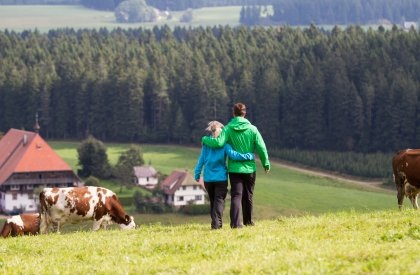
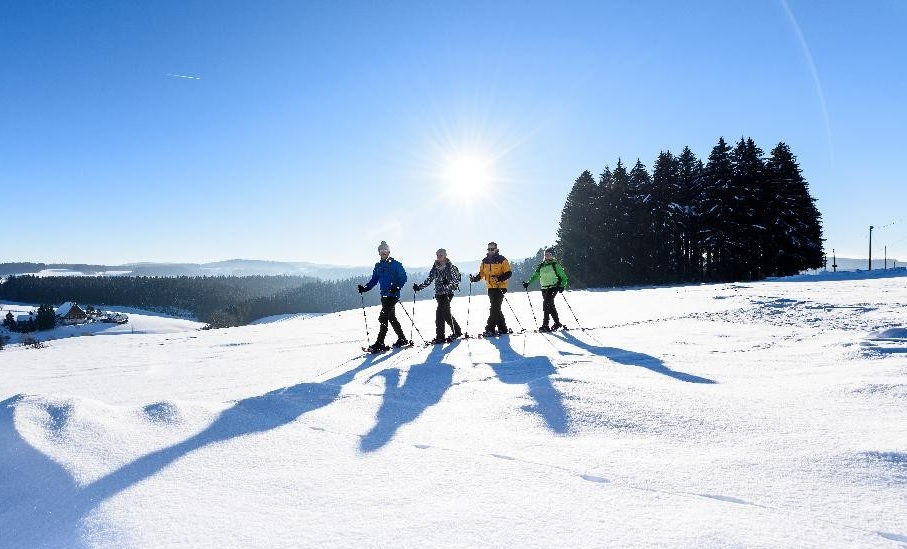

Sport & Aktivitäten

Entdecken Sie sportliche Angebote in und um Furtwangen.

Outdoor & Natur
- Wanderung zur Brend-Turm
- Mountainbike-Strecken Linach-Damm
- Barfußpfad & Grillstellen im Talwald
Fitness & Hallensport
- Beri Fitness
- Fit+ Furtwangen
- Otto-Hahn-Gymnasium

Wintersport
- Langlaufloipen Martinskapelle
- Skilift in Rohrbach
- Rodeln am Kandel